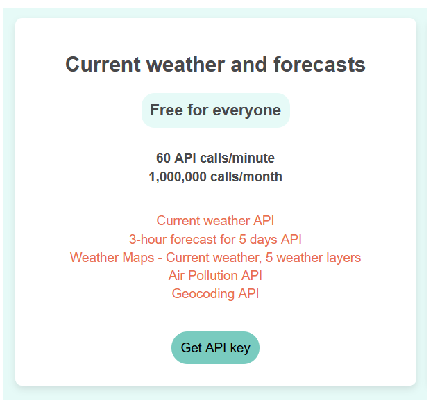
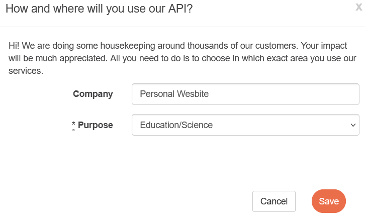
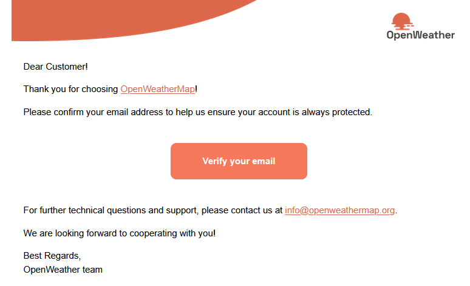
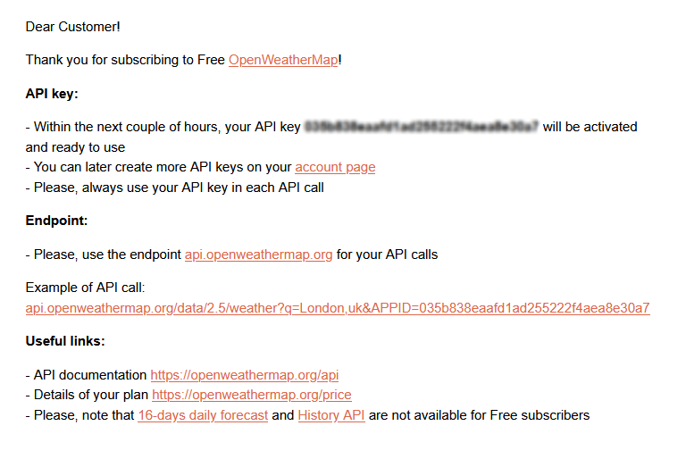
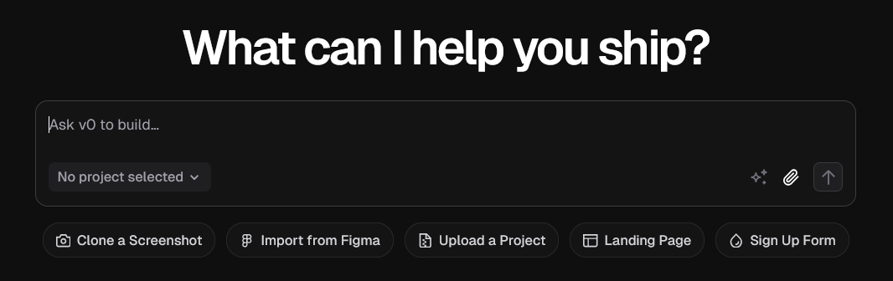

Learning Goals
At the end of this Tutorial, you will be able to:
- Create a free Vercel account to access v0.dev
- Design a weather app for a specific location using v0.dev's AI interface
- Customise the appearance and functionality of your weather app
- Create a basic HTML webpage to host your weather app
- Embed your weather app in a webpage using an iframe
Building web apps with AI
A growing number of inline services offer the ability to build web apps without needing to write code (or only a minimal amount of code). Among them:
In this Tutorial, you will use an AI app builder from Vercel called v0.dev.
Online data sources and APIs
APIs (Application Programming Interfaces) enable your web pages to communicate with online data sources, both free and commercial. They serve as bridges that let you request specific information from external services and incorporate it into your own projects.
An API is essentially a set of rules that allows different software applications to communicate with each other. When you use an API to access an online data source, you're making a request to their server, which then returns the data you asked for in a structured format. You can then display that data in your web pages.
Here are two popular free online data sources that offer APIs:
Although these are free to use, they impose usage limits and require a user access key.
A commercial data source is Google Maps.
In this Tutorial, you will use the free version of v0.dev to create a weather app for a specific location, then embed it in a webpage.
You can view a completed version of the project here.
Creating a free account with OpenWeatherMap
Follow these steps:
- Visit openweathermap.org/price
- Scroll down the screen and, in the Free Access, Current weather and forecasts click the Get API key button. 
- Follow the prompts to complete the registration process.
- You can respond to the form as follows. 
- Respond to the confirmation email. 
- You will now receive a second email that contains your unique access key. 
Creating a free account with Vercel
Follow these steps:
- Visit vercel.com/signup
- Choose your preferred sign-up method. GitHub is recommended for easy integration.
- Follow the prompts to complete the registration process
- After creating your account, navigate to v0.dev
The free tier of v0.dev includes:
- Access to core AI design capabilities
- Limited number of generations per day
✅ Once you have access to v0.dev, you're ready to create your weather app.
Prompting the AI to build the weather app
Now it's time to design your weather app using v0.dev's AI interface:
- In the home page of v0, you'll see a prompt input field. 
- Enter the following detailed prompt for your weather app:
Generate a weather app for [location] that displays the following data:
* Location Name
* Summary
* Temperature
* Humidity
* Pressure
The app should use the OpenWeather API with the access key below:
bc425ac2188d406c884f4fdd88b339f0
The data should be displayed full-screen with a suitable image background. Use responsive CSS and appropriate color choices.
Update the app to display one set of colours for daytime and a second colour palette for nightime.
After entering your prompt, click the Generate icon and wait for v0.dev to process your request. This usually takes 15-30 seconds.
Once generated, you'll see a preview of your weather app at the right of the screen.
Finally, click the Deploy button at the top-right to publish your weather app online. This may take a few minutes.
When finished, click the Visit button to display the online web page.It will have a web address similar to the following:
https://v0-weather-app-requirements-virid.vercel.app/
Customising your weather app
If you're not completely satisfied with the initial design, you can customise it further by entering new prompts. For example:
Include a weather-appropriate quote from a famous Irish authorContinue refining your weather app until you're happy with the design. Remember that the free tier has daily limits on the number of generations, so use your prompts wisely.
Creating a web page for your weather app
Now let's create a simple HTML webpage to host our weather app:
- In VS Code, create a new text file and save it as weather.html in your portfolio/ folder.
- Add the following basic HTML structure:
<!DOCTYPE html>
<html lang="en">
<head>
<meta charset="UTF-8">
<meta name="viewport" content="width=device-width, initial-scale=1.0">
<title>My Weather App</title>
<style>
body {
font-family: Arial, sans-serif;
margin: 0;
padding: 0;
background-color: #f5f5f5;
}
header {
background-color: #0070f3;
color: white;
text-align: center;
padding: 1rem;
}
h1 {
margin: 0;
}
.container {
max-width: 800px;
margin: 0 auto;
padding: 2rem;
}
.app-container {
background-color: white;
border-radius: 10px;
box-shadow: 0 4px 6px rgba(0, 0, 0, 0.1);
overflow: hidden;
margin-bottom: 2rem;
}
footer {
text-align: center;
padding: 1rem;
color: #666;
}
</style>
</head>
<body>
<header>
<h1>Weather Dashboard</h1>
</header>
<div class="container">
<p>Welcome to my weather dashboard. Below you'll find the current weather and forecast.</p>
<div class="app-container">
<!-- Weather app will be embedded here -->
</div>
<p>This weather app was created using v0.dev from Vercel, a powerful AI tool for generating UI components.</p>
</div>
<footer>
<p>Created with v0.dev by Vercel</p>
</footer>
</body>
</html>This creates a simple webpage with a header, a container for our weather app, and a footer. The CSS provides basic styling to make the page look presentable.
Save this file. In the next section, we'll add the iframe to embed our weather app.
Embedding the weather app
The iframe (inline frame) tag is an HTML element that allows you to embed another HTML document within the current webpage. It creates a rectangular area within your page that displays the content from another source, essentially creating a window to another webpage.
Now we'll embed the weather app in our webpage using an iframe:
- Open the weather.html file you created in the previous step
- Locate the div with the class app-container where we left a comment for the weather app
- Replace the comment with an iframe element that points to your v0-created app.
<div class="app-container">
<iframe
src="[Your weather app web address]"
width="100%"
height="500"
frameborder="0"
title="Weather App"
loading="lazy"
allowtransparency="true"
></iframe>
</div>Be sure to replace [Your weather app web address] with the actual web address of your published web app on the Vercel website.
✅ You've successfully created and embedded a weather app in your webpage!
Save your updated HTML file after adding the iframe.
Upload your weather.html web page to your portfolio folder on GitHub.